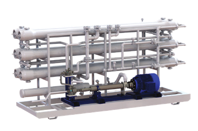

SEAWATER RO · BITURBO
BiTurbo 多段海水 RO
海水淡化｜多段壓力配置與回收率評估
讓壓力配置，跟上每一段膜的需求。
BiTurbo 是 FEDCO 的多段海水 RO 系統配置方案。兩台渦輪增壓器分別參與進水與段間增壓，並回收末段濃水的壓力能。評估時將膜段配置、回收率與整體用電一起考量，適合新建海水淡化或既有 RO 系統改造的方案討論。

01進水增壓
配合第一段膜進水需求
02段間增壓
銜接第二段膜壓力需求
03濃水能量回收
將末段壓力能回用於增壓
從這些需求開始討論
- 新建海水 RO，評估分段膜列與壓力配置。
- 既有海水 RO，評估回收率調整與改造介面。
回收率與用電表現須依進水鹽度、溫度、膜配置及整體流程評估。
可洽詢的設備系列
依流量、壓力及控制方式選配高壓泵浦與渦輪增壓器。以下為可討論的設備系列，實際組合依設計確認。


原廠技術白皮書
白皮書的案例與性能數據適用於各自的進水與設計條件。